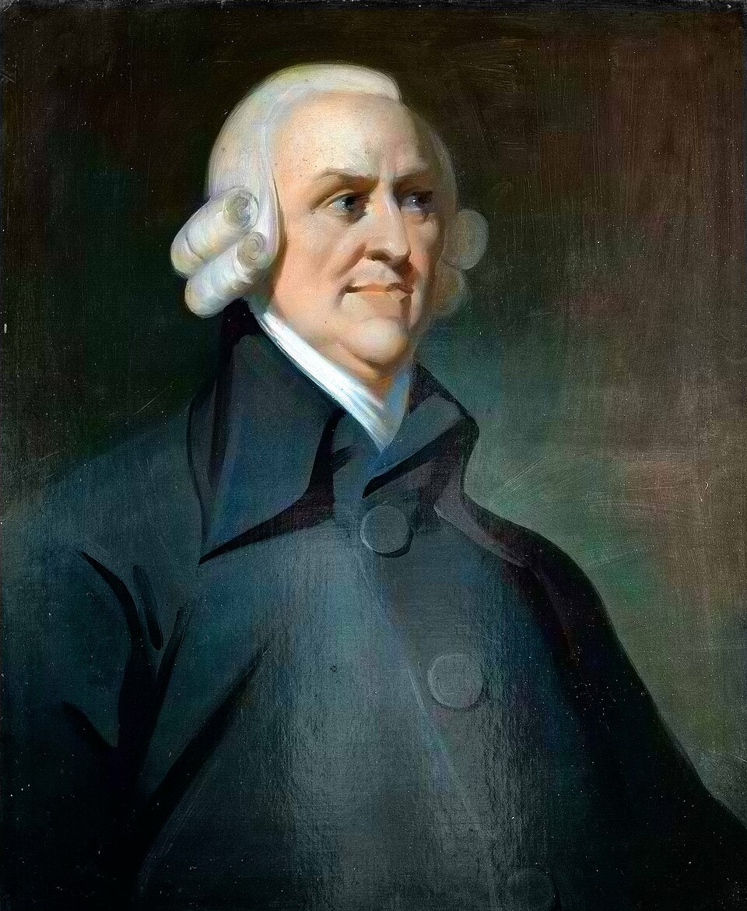

Who Was Adam Smith?
Adam Smith (1723–1790) was a Scottish philosopher, moral theorist, political economist, and one of the most important thinkers of the Scottish Enlightenment. He is widely known for The Wealth of Nations, a foundational work in the history of modern economics, but his intellectual interests extended far beyond markets and wealth.
Adam Smith's philosophy was deeply concerned with human nature, morality, sympathy, justice, social institutions, trade, government, and prosperity. Before becoming famous as an economist, Smith was primarily known as a professor of moral philosophy. His earlier work, The Theory of Moral Sentiments, explored how human beings develop moral judgments and live together in society.
Smith is often described as the father of modern economics because of his analysis of markets, labor, trade, and economic growth. However, reducing Adam Smith to a simple defender of greed or unrestricted capitalism misses the complexity of his thought. His economic ideas were connected to a broader philosophical vision of morality, justice, freedom, institutions, and human flourishing.
Understanding Adam Smith's philosophy and economics therefore requires examining both of his major works. The moral world of sympathy and the impartial spectator in The Theory of Moral Sentiments forms an important background for the economic world of exchange, self-interest, division of labor, and markets described in The Wealth of Nations.
Adam Smith: Quick Facts
- Full name — Adam Smith
- Born — June 5, 1723
- Died — July 17, 1790
- Birthplace — Kirkcaldy, Scotland
- Philosophical tradition — Scottish Enlightenment
- Main fields — Moral philosophy, political economy, ethics, political philosophy, and social theory
- Known for — The invisible hand, division of labor, free markets, moral sentiments, and political economy
- Famous work — The Wealth of Nations
- Major philosophical work — The Theory of Moral Sentiments
- Important concept — The impartial spectator
- Major influence — Scottish Enlightenment philosophy and modern economics
Adam Smith's Early Life and Education

```Adam Smith was born in Kirkcaldy, Scotland, in 1723, during a period of significant intellectual and economic change in Britain. His father, also named Adam Smith, died before his birth, and he was raised primarily by his mother, Margaret Douglas. Smith grew up in an environment shaped by Scottish commercial development and by the expanding intellectual culture that would later become known as the Scottish Enlightenment.
Smith entered the University of Glasgow as a young student, where he was strongly influenced by the philosopher Francis Hutcheson. Hutcheson's lectures on moral philosophy introduced him to questions concerning human nature, liberty, ethics, society, and the foundations of moral judgment. The intellectual atmosphere of Glasgow encouraged Smith to examine human life through observation, reason, and systematic philosophical inquiry.
Smith later continued his education at Balliol College, Oxford. Although he was less impressed by the intellectual environment there, his years at Oxford gave him extensive exposure to classical literature and philosophy. He studied ancient authors and developed interests that would remain important throughout his life, combining classical learning with the new philosophical questions emerging during the European Enlightenment.
After returning to Scotland, Smith began giving public lectures on rhetoric and philosophy before receiving an academic appointment at the University of Glasgow. He eventually became Professor of Moral Philosophy, teaching subjects that included ethics, law, politics, and political economy. His academic career established him first as a moral philosopher, long before The Wealth of Nations made him internationally famous.
Smith's education and early academic career are important because they show that his economic writings emerged from a much broader philosophical project. His interest in commerce was connected with questions about human motivation, justice, social institutions, and historical development. To understand Adam Smith only as an economist therefore overlooks the philosophical foundations that shaped his entire intellectual career.
Adam Smith and the Scottish Enlightenment
Adam Smith was one of the central figures of the Scottish Enlightenment, an intellectual movement that included philosophers, historians, scientists, and writers such as David Hume, Francis Hutcheson, and Adam Ferguson. These thinkers sought to understand human beings through history, observation, reason, and the study of social institutions rather than through abstract speculation alone.
A central concern of the Scottish Enlightenment was the development of human society over time. Its thinkers asked how institutions such as law, morality, commerce, government, and social customs emerge from repeated human interaction. This historical and developmental approach encouraged philosophers to examine institutions as products of social life rather than simply as arrangements created according to a single rational plan.
This perspective strongly influenced Adam Smith's understanding of economic life. Markets, prices, trade, and the division of labor could develop through the interaction of many individuals pursuing different purposes. Social coordination did not necessarily require a central authority consciously directing every activity, because institutions could emerge gradually from patterns of exchange, cooperation, and competition.
Smith's relationship with David Hume was also particularly important within this intellectual environment. The two philosophers shared interests in human nature, morality, history, commerce, and the development of social institutions. Although they developed different philosophical arguments, their friendship and intellectual exchange illustrate the collaborative character of philosophical life during the Scottish Enlightenment.
Smith's place within the Scottish Enlightenment is important because his thought connected several disciplines into a larger intellectual project. Ethics, psychology, jurisprudence, politics, history, and economics were deeply interconnected in his work. His philosophy therefore reflects the Enlightenment ambition to understand human beings not in isolation, but as social creatures living within institutions that develop across history.
What Was Adam Smith's Philosophy?
Adam Smith's philosophy began with fundamental questions about human nature and moral life: how do individuals develop judgments about right and wrong while living among other people? His answer emphasized sympathy, imagination, social interaction, and the human capacity to view personal conduct from a perspective that extends beyond immediate self-interest and private desire.
Smith did not believe that human beings are motivated by only one principle. People pursue self-interest, but they are also capable of sympathy, friendship, generosity, resentment, admiration, and a desire for social approval. Human behavior is therefore considerably more complex than the popular image of the purely selfish individual sometimes associated with Smith's later economic writings.
His philosophy also examined the relationship between individual freedom and social order. Smith was interested in how people can pursue personal goals while participating in communities governed by law, justice, moral expectations, and economic exchange. Freedom, in his thought, does not exist outside society but operates within institutions that make peaceful cooperation and mutual security possible.
Smith paid particular attention to the unintended consequences of human action. Individuals often act for particular personal reasons, yet their combined activities may produce wider social patterns that nobody intended or designed in advance. This insight appears in his discussions of morality, commerce, and institutional development and became an important feature of later social and economic thought.
Adam Smith's broader philosophical system therefore connects moral philosophy with political economy. The thinker who investigated sympathy and moral judgment also examined labor, trade, wealth, government, and social institutions. His philosophy attempts to explain how human beings form moral relationships while also participating in complex systems of economic cooperation and social exchange.
Adam Smith's The Theory of Moral Sentiments
The Theory of Moral Sentiments, first published in 1759, is one of Adam Smith's most important philosophical works. The book investigates the foundations of moral judgment and asks why human beings approve of certain actions while condemning others. It presents a detailed account of the relationship between emotion, imagination, social interaction, and the development of moral standards.
Smith argues that human morality is closely connected with sympathy, meaning the capacity to imaginatively enter into another person's situation. We do not experience another person's feelings exactly as they do, but we can imagine how we might respond under similar circumstances. This imaginative movement between our own perspective and that of another person provides an important basis for moral judgment.
Moral judgment develops because people continually observe and evaluate one another. We consider whether another person's emotions and actions appear appropriate to a particular situation, while also recognizing that others evaluate our own conduct. Human beings therefore learn morality partly through participation in a social world in which feelings, actions, and motives are constantly subjected to judgment.
The book also develops Smith's famous idea of the impartial spectator. As individuals mature, they learn to examine their own conduct by imagining how a fair and informed observer might judge them. This process encourages people to moderate excessive passions and to distinguish between what they personally desire and what can reasonably be justified before others.
The Theory of Moral Sentiments therefore presents a sophisticated picture of moral life as both emotional and social. Smith rejects the idea that morality can be explained entirely by selfish calculation or abstract rules. Sympathy, propriety, justice, self-command, and the desire for mutual understanding all contribute to the development of moral character and the maintenance of stable human relationships.
Adam Smith's Theory of Sympathy
Sympathy is one of the central concepts in Adam Smith's moral philosophy. For Smith, human beings possess an important imaginative capacity that allows them to understand and respond to the experiences of other people. This capacity helps explain why another person's happiness, suffering, success, or misfortune can become meaningful to observers who are not directly experiencing the same event.
Smith's use of sympathy is broader than the modern idea of simply feeling pity for someone. Sympathy refers to the process through which we imaginatively place ourselves in another person's situation and consider how we would respond under similar circumstances. Because we must use imagination, sympathy involves interpretation and judgment rather than a simple emotional transmission from one person to another.
This process helps explain why people approve or disapprove of emotions. We may consider grief understandable after a serious loss but regard an extreme emotional response to a minor inconvenience as excessive. Our judgments depend partly upon whether we find another person's feelings proportionate to the circumstances as we understand them from our own imaginative perspective.
Sympathy also operates in the opposite direction because individuals want their own feelings to be understood by others. Since other people cannot experience our emotions with exactly the same intensity, we often moderate how we express them. This mutual adjustment between personal feeling and social response becomes an important part of Smith's explanation of self-control and the formation of moral character.
Sympathy therefore makes social life possible in a deeper sense than simple kindness or compassion. Human beings seek understanding and approval while also attempting to understand the experiences of others. Smith viewed moral life as deeply connected with imagination, communication, and participation in a community of judging individuals whose perspectives continually shape how people understand themselves and their conduct.
What Is Adam Smith's Impartial Spectator?
The impartial spectator is one of Adam Smith's most famous philosophical ideas. It refers to an imagined perspective from which individuals attempt to judge their own actions more fairly and objectively. Instead of considering a situation only from the position of immediate personal interest, a person imaginatively asks how a reasonably informed observer would evaluate the conduct in question.
People naturally experience their own desires and emotions with great intensity. Because we are directly involved in our own situations, we may exaggerate the importance of personal success, failure, praise, criticism, or injury. Smith believed that this natural partiality creates an important moral problem: how can individuals judge themselves fairly when their own passions constantly influence their perspective?
The impartial spectator represents an effort to step outside this immediate personal viewpoint. An individual asks how an informed and disinterested observer might see the situation. Would such an observer consider the action fair, appropriate, generous, cruel, selfish, or excessive? Through this imaginative exercise, personal conduct becomes open to a broader form of reflection and moral evaluation.
Smith believed that repeated social experience gradually helps people internalize this perspective. We first encounter the judgments of actual other people, but over time we learn to imagine an internal observer who can evaluate our conduct even when nobody else is present. Moral self-examination therefore develops through social interaction and becomes part of an individual's capacity for independent reflection.
Through this process, people can develop self-command and moral discipline. The impartial spectator does not mean that morality is simply identical with whatever a particular society approves of. Instead, it provides a philosophical model for examining personal conduct from a perspective less dominated by private passion and immediate self-interest, encouraging greater fairness in moral judgment.
Adam Smith's Philosophy of Morality
Adam Smith believed that morality develops through the interaction between human feelings, imagination, and social judgment. People are not born with a complete and explicit list of moral rules already formed in their minds. Instead, moral understanding develops through experience, reflection, and repeated encounters with the judgments that individuals make about one another's emotions, motives, and actions.
Smith emphasized the importance of propriety, or the appropriateness of emotions and actions in particular circumstances. A moral judgment often asks whether a person's response is suitable to the situation rather than merely whether it produces a desirable outcome. Different circumstances call for different responses, and moral maturity involves learning to judge those circumstances with greater sensitivity.
Justice occupied a special place within Smith's moral philosophy. While acts of generosity and beneficence may be admirable, justice establishes essential limits on how people may treat one another. A stable society cannot exist if individuals are permitted to injure others without restraint, because social cooperation depends upon protection against violence, fraud, and serious violations of personal security.
Smith also regarded self-command as an important virtue. Human beings often experience passions more intensely than the people around them can share or approve. Learning to regulate anger, ambition, grief, and other emotions allows individuals to bring personal feelings into better proportion with the circumstances and with the perspectives of other members of society.
Smith therefore did not build morality entirely on economic self-interest. His philosophy recognizes sympathy, justice, self-command, social approval, and concern for others as fundamental elements of human life. Moral order emerges from complex interactions between individual feeling and social judgment, producing standards that help people live together despite their different interests, passions, and personal circumstances.
Adam Smith and Self-Interest
Adam Smith is frequently associated with the idea of self-interest. However, his actual view of human nature was far more complex than the popular claim that he believed greed to be the only human motivation. Smith recognized that people seek personal advantage, but his moral philosophy also gives major importance to sympathy, justice, friendship, generosity, and the desire for social approval.
In economic life, Smith recognized that individuals often pursue their own interests. A merchant seeks profit, a worker seeks wages, and a consumer seeks goods that satisfy particular needs. Exchange can occur because different individuals benefit from cooperation. Economic interaction therefore allows people with different purposes to coordinate their activities without requiring them to share exactly the same goals.
Yet Smith carefully distinguished ordinary self-interest from unlimited selfishness. A person may legitimately pursue personal goals while still respecting justice, law, morality, and the interests of other people. Self-interest always operates within a larger social and institutional world, and economic activity can function properly only where basic rules of justice and trust make cooperation sufficiently secure.
Smith's analysis also shows that self-interested actions do not automatically produce beneficial results. Markets can encourage productive cooperation, but particular individuals and groups may also seek privileges, monopolies, or political advantages at the expense of the wider public. Smith was therefore critical of powerful commercial interests when their influence distorted competition or encouraged governments to grant special favors.
Adam Smith's philosophy therefore does not simply celebrate greed. His moral writings repeatedly emphasize sympathy, restraint, justice, and self-command. His economic theory explains how self-interested actions can sometimes contribute to social cooperation and prosperity, but it does not claim that every selfish action benefits society or that moral concerns disappear when individuals enter the marketplace.
Adam Smith's View of Human Nature
Adam Smith's view of human nature combines social feeling with individual interest. Human beings want to improve their circumstances, seek recognition, form relationships, exchange goods, and participate in communities governed by moral expectations. Smith therefore rejected any simple theory that reduces human behavior entirely to either selfishness or benevolence, emphasizing the diversity of human motives.
Smith believed that people possess a strong desire for what he called mutual sympathy of sentiments. Individuals want other people to understand their feelings and often modify their own behavior because they wish to receive approval from those around them. This desire for mutual understanding helps explain why people care about reputation and why social judgment can influence conduct even when no formal law is involved.
At the same time, people are concerned with their own security, comfort, reputation, and prosperity. Economic life provides one important arena in which these interests are pursued through cooperation, exchange, specialization, and trade. Smith regarded the human tendency to exchange and cooperate for mutual advantage as an important feature of social and economic development.
Human beings are also capable of learning self-command. Social experience teaches individuals that other people cannot be expected to share every private passion with the same intensity. As a result, people learn to moderate their emotions and consider how their actions appear from outside their immediate perspective, contributing to the development of moral character and stable relationships.
This complex understanding of human nature helps explain why Adam Smith belongs equally to the history of philosophy and economics. His economic analysis was built upon psychological and social observations about how people behave within communities and institutions. Markets, morality, and political systems all depend upon human motivations that are varied, socially shaped, and capable of both cooperation and conflict.
Adam Smith's The Wealth of Nations
An Inquiry into the Nature and Causes of the Wealth of Nations, commonly known as The Wealth of Nations, was published in 1776 and became one of the most influential books in the history of economics and political thought. The work investigates the conditions under which societies become more productive and prosperous, connecting economic activity with institutions, laws, labor, and government policy.
The central question of the work is not simply how particular individuals become rich. Smith asks what makes an entire society prosperous and how its resources are produced and distributed. He examines labor, productivity, trade, prices, wages, capital, taxation, and government, attempting to explain the complex relationships between individual economic activity and the broader development of national wealth.
Smith argued that national wealth depends heavily upon the productive capacity of labor. One of the most important ways productivity can increase is through the division of labor, in which different people specialize in particular tasks. Specialization can increase skill, save time otherwise lost when changing activities, and encourage the development of tools and methods that make production more efficient.
The Wealth of Nations also contains an important criticism of mercantilist policies that treated the accumulation of precious metals and the protection of favored industries as central goals of national policy. Smith argued for a broader understanding of wealth based on productive activity, exchange, and the goods and services available within society rather than on the mere possession of gold and silver.
The book established Adam Smith as a foundational figure in classical economics, although his views are often simplified in modern discussions. Smith did not advocate the complete absence of government and recognized important public functions involving justice, defense, and public works. His influence continues in debates about capitalism, markets, trade, regulation, taxation, and the relationship between individual enterprise and public prosperity.
Major Works of Adam Smith
- The Theory of Moral Sentiments — Adam Smith's major work on sympathy, morality, moral judgment, virtue, justice, and the impartial spectator.
- The Wealth of Nations — His most famous work on political economy, labor, trade, markets, taxation, government, and economic development.
- Lectures on Justice, Police, Revenue and Arms — A collection of lectures providing important insight into Smith's legal, political, and economic thought.
- Essays on Philosophical Subjects — A collection containing writings that reveal Smith's broader philosophical interests, including the history and development of scientific ideas.
Together, these works demonstrate the remarkable range of Adam Smith's thought. He was not simply an economist but a philosopher interested in morality, science, law, politics, society, and the historical development of human institutions. His major writings emerged from the broader intellectual culture of the Scottish Enlightenment.
The Theory of Moral Sentiments, first published in 1759, established Smith as an important moral philosopher. It examines sympathy, moral approval, justice, virtue, and self-command, asking how individuals learn to judge both their own conduct and the conduct of others within the ordinary circumstances of social life.
The Wealth of Nations, published in 1776, extended Smith's inquiry into the organization of commercial society. It examines the division of labor, exchange, prices, wages, capital, taxation, trade, and government, while asking why some societies become more productive and prosperous than others over time.
Smith's other writings and surviving lectures reveal the wider scope of his philosophical interests. They address subjects ranging from justice and public administration to language, astronomy, and the history of scientific explanation. Taken together, his works form an unusually broad attempt to understand human beings and the institutions they create.
Adam Smith's Main Ideas
1. Sympathy Is Central to Moral Life
Human beings can imaginatively understand the experiences of others. This capacity for sympathy helps people evaluate emotions, actions, and moral situations from perspectives beyond their immediate personal interests. Smith believed that moral life develops partly through this continual effort to enter imaginatively into another person's situation.
2. The Impartial Spectator Helps Guide Moral Judgment
People can imagine how an informed and impartial observer might judge their conduct. This process encourages self-command and allows individuals to examine their own actions more critically. By stepping beyond immediate passion, individuals can ask whether their behavior appears fair, proper, proportionate, or worthy of approval.
3. Division of Labor Increases Productivity
Specialization allows workers to become more efficient and productive. The division of labor became one of Smith's most important explanations for the growth of wealth in commercial societies. Repeated practice, reduced transitions between tasks, and technical innovation can together greatly increase the productive capacity of human labor.
4. Self-Interest Can Encourage Cooperation
Individuals pursuing legitimate personal interests can cooperate through exchange because each participant may benefit from the transaction. Self-interest does not necessarily mean hostility toward others, since economic cooperation often requires trust, communication, mutual advantage, and institutions that establish predictable rules.
5. Markets Can Coordinate Complex Economic Activity
Economic systems can develop through the interactions of many individuals without requiring every decision to be directed by a central authority. The invisible hand became a famous expression of Smith's wider interest in unintended consequences, although it should not be treated as a simple claim that every market outcome is beneficial.
6. Justice Is Essential for Society
Freedom and economic activity depend upon a framework of law and justice. A stable society cannot function when individuals are permitted to injure, coerce, or exploit others without restraint. Smith therefore connected commercial freedom with institutions capable of protecting persons, property, contracts, and social cooperation.
Adam Smith's Economics Explained
Adam Smith's economics begins with the observation that people live in societies characterized by exchange and cooperation. Individuals possess different skills, resources, and needs, creating opportunities for them to trade with one another. Economic life therefore develops through countless relationships rather than through isolated acts of individual production.
As societies become more complex, individuals specialize in particular occupations and productive tasks. The division of labor can increase productivity by improving skill, saving time, and encouraging technical innovation. Greater productivity can make a wider quantity and variety of goods available throughout a growing commercial society.
Markets provide mechanisms through which buyers and sellers interact. Prices communicate information about demand, scarcity, and the costs of production, helping coordinate economic activity across large populations. Smith was interested in how such coordination could emerge without every individual decision being directed by a single central authority.
Smith believed that governments should generally avoid unnecessary restrictions that protect special interests or prevent productive exchange. At the same time, governments retain essential responsibilities involving defense, justice, public institutions, and other areas where private activity may not provide sufficient results for the wider community.
Common Misunderstandings About Adam Smith
Adam Smith Did Not Believe Humans Are Only Selfish
His moral philosophy places sympathy, moral judgment, justice, and self-command at the center of human social life. Self-interest is important in economics, but it is not the only motivation recognized in Smith's philosophy. Friendship, generosity, resentment, ambition, and the desire for approval also belong to his complex account of human nature.
The Invisible Hand Was Not His Only Major Idea
The phrase became far more prominent in later discussions of Smith's thought, but his intellectual work covered much more than the invisible hand. His theories of sympathy, moral judgment, labor, justice, education, and institutions are equally important for understanding his philosophy and should not be overshadowed by a single famous expression.
Adam Smith Did Not Oppose All Government Activity
Smith supported important responsibilities for government, including defense, justice, public works, and aspects of education. His philosophy criticized unnecessary intervention and systems of special privilege rather than arguing that society could function without public institutions. Economic freedom, for Smith, operated within an established legal order.
Adam Smith Was More Than an Economist
Smith was fundamentally a philosopher whose economic work developed from broader questions about human nature, morality, society, and the historical development of institutions. Reading his economic writings alongside his moral philosophy reveals a thinker concerned with the entire structure of social life rather than merely with wealth, prices, or private profit.
Adam Smith's Influence on Economics and Philosophy
Adam Smith had an enormous influence on the development of classical economics. Later economists continued to debate and develop his theories concerning value, labor, trade, competition, taxation, and economic growth. His work provided an important starting point for later attempts to explain the structure of modern economies.
His ideas also influenced political philosophy. Arguments concerning individual liberty, limited government, free trade, private property, and commercial society frequently developed in conversation with Smith's work. Yet different political traditions have interpreted his arguments in sharply different ways throughout modern intellectual history.
Smith influenced thinkers who agreed with him as well as those who strongly criticized him. Classical economists, liberal political thinkers, social theorists, and critics of capitalism all engaged with problems that Smith helped place at the center of modern intellectual debate about wealth, labor, institutions, and social development.
His influence remains visible in contemporary discussions about markets and government. Questions concerning regulation, inequality, globalization, education, public institutions, and economic freedom continue to raise issues that Adam Smith examined more than two centuries ago. His ideas remain influential partly because these problems have never disappeared.
Adam Smith's Legacy
Adam Smith's greatest legacy is the creation of an intellectual bridge between moral philosophy and political economy. His work demonstrated that economic behavior cannot be understood completely without considering human psychology, social institutions, law, morality, and history. Economic systems are ultimately created and sustained by human beings.
The Wealth of Nations helped establish the systematic study of national economies, while The Theory of Moral Sentiments remains an important work in ethics and the philosophy of human behavior. Together, these books challenge the tendency to separate economic questions completely from questions about morality and social life.
Smith's ideas became central to the history of liberalism and capitalism, but they have also been interpreted and criticized in different ways. His writings continue to generate disagreement because they address problems involving freedom, inequality, commerce, government, and the distribution of wealth that remain central to modern societies.
The enduring importance of Adam Smith lies partly in his complexity. He was interested not merely in wealth but in the conditions under which human beings can cooperate, judge one another morally, establish institutions, and create prosperous societies. His legacy therefore belongs to the history of philosophy as much as to the history of economics.
Adam Smith's Philosophy Explained Simply
- How do humans know what is morally right? Adam Smith believed people use sympathy and imagination to understand others and judge whether actions and emotions are appropriate.
- What is the impartial spectator? It is the imagined perspective of a fair observer that helps us examine our own behavior more objectively.
- Why is the division of labor important? Specialization allows people to become more productive and helps societies produce greater quantities of goods.
- What is the invisible hand? It describes how individual actions can sometimes produce broader social effects without those effects being centrally planned.
- Did Adam Smith support free markets? Yes, but he also believed that markets require law, justice, and important public institutions.
- What was Adam Smith's biggest concern? Smith wanted to understand human beings and society, including morality, cooperation, wealth, institutions, and the conditions that allow societies to prosper.
Put simply, Adam Smith believed that human beings are both social and self-interested. People care about their own circumstances, but they also seek the approval of others, sympathize with suffering, and judge behavior according to standards of fairness, propriety, and justice within their communities.
His economic philosophy explains how cooperation can emerge through specialization and exchange. Individuals do not need to share identical goals in order to benefit from one another, because voluntary exchange can connect different interests. However, such cooperation depends upon law, trust, justice, and functioning social institutions.
Smith therefore did not offer a philosophy saying simply that everyone should pursue money or profit without limits. His moral writings repeatedly emphasize self-command and concern for others, while his economic analysis examines the productive possibilities and institutional problems of commercial society.
The simplest way to understand Smith is to see his thought as an attempt to explain how people live together. He investigated how they make moral judgments, cooperate through exchange, create institutions, and develop societies capable of producing greater prosperity and maintaining social order across increasingly complex forms of human life.
Why Is Adam Smith Important in the History of Philosophy?
Adam Smith is important because he transformed the study of economic and social life. He helped establish political economy as a systematic field concerned with the causes of national wealth and the operation of commercial societies. His analysis connected economic development with labor, institutions, exchange, law, and long-term historical change.
His importance also extends beyond economics. Smith developed one of the Enlightenment's most sophisticated theories of moral judgment, explaining how sympathy, imagination, social interaction, and self-command contribute to ethical life. The theory of the impartial spectator remains one of his most distinctive contributions to moral philosophy.
His work demonstrates that economics and philosophy are deeply connected. Questions about wealth inevitably involve questions about human nature, justice, institutions, freedom, education, and the organization of society. Smith examined these subjects as interconnected parts of a larger inquiry into how human beings live and cooperate.
Adam Smith also remains important because his ideas continue to be debated rather than merely accepted as historical doctrines. Discussions about markets, inequality, government regulation, public education, trade, and capitalism still return to questions that he examined during the eighteenth century, often producing competing interpretations of his work.
Adam Smith therefore remains one of the essential thinkers for anyone studying Enlightenment philosophy, political philosophy, capitalism, economics, ethics, or the history of modern thought. His lasting significance lies in the extraordinary breadth of his attempt to understand morality, institutions, commercial society, and human flourishing.
Frequently Asked Questions About Adam Smith
Who was Adam Smith?
Adam Smith was a Scottish philosopher, moral theorist, and political economist who lived from 1723 to 1790. He was one of the leading thinkers of the Scottish Enlightenment and is widely regarded as a foundational figure in modern economics.
What is Adam Smith famous for?
Adam Smith is famous for writing The Wealth of Nations and developing influential ideas about the division of labor, free markets, trade, self-interest, and the invisible hand. He also wrote the major philosophical work The Theory of Moral Sentiments.
What was Adam Smith's philosophy?
Adam Smith's philosophy examined morality, sympathy, human nature, justice, freedom, society, and economic life. His moral philosophy emphasized sympathy and the impartial spectator, while his political economy studied markets, labor, wealth, and institutions.
What is the invisible hand?
The invisible hand is a phrase associated with Adam Smith's idea that individuals pursuing their own interests can sometimes contribute to broader social outcomes without intending to do so. It does not mean that every selfish action automatically benefits society.
What did Adam Smith believe about capitalism?
Adam Smith analyzed the development of commercial society and strongly influenced later theories of capitalism. He supported competition and economic freedom but also recognized the importance of justice, education, public institutions, and limits on special privileges.
What is Adam Smith's division of labor?
The division of labor is the organization of production into specialized tasks performed by different workers. Smith argued that specialization can dramatically increase productivity, skill, and economic output.
What is The Wealth of Nations about?
The Wealth of Nations investigates the causes of national prosperity. Adam Smith examines labor, specialization, trade, prices, taxation, capital, government, and the institutions that influence economic development.
What is The Theory of Moral Sentiments about?
The Theory of Moral Sentiments explores how human beings make moral judgments. Adam Smith emphasizes sympathy, imagination, social interaction, propriety, justice, and the idea of the impartial spectator.
Did Adam Smith believe humans are selfish?
No. Adam Smith recognized self-interest as an important human motivation, particularly in economic life, but his moral philosophy also emphasized sympathy, friendship, justice, generosity, and self-command.
Did Adam Smith believe in free markets?
Yes. Adam Smith generally supported economic freedom and competition while criticizing monopolies and unnecessary restrictions. However, he did not believe government had no role, assigning it responsibilities involving defense, justice, public works, and education.
Why is Adam Smith called the father of economics?
Adam Smith is often called the father of modern economics because The Wealth of Nations provided a systematic analysis of production, labor, trade, markets, taxation, and national prosperity, strongly influencing the development of classical economics.
What was Adam Smith's impartial spectator?
The impartial spectator is an imagined perspective through which individuals evaluate their own behavior. By considering how a fair and informed observer might judge an action, people can develop greater self-command and moral awareness.
What did Adam Smith believe about government?
Adam Smith believed government had essential responsibilities, particularly defense and justice. He also supported certain public institutions and works when private individuals would not provide them adequately for the benefit of society.
How did Adam Smith influence Karl Marx?
Karl Marx studied Adam Smith and other classical economists closely. Smith's discussions of labor, value, production, wages, and commercial society formed part of the intellectual background that Marx later criticized and transformed in his own analysis of capitalism.
What is Adam Smith's most important idea?
There is no single idea that completely represents Adam Smith. His most famous economic ideas include the division of labor and the invisible hand, while his most important philosophical concepts include sympathy and the impartial spectator.
Related Enlightenment and Modern Philosophers
Explore other major philosophers who shaped Enlightenment thought, political philosophy, ethics, economics, liberalism, and modern social theory.
Related Areas of Philosophy
Adam Smith's thought connects moral philosophy with ethics, political philosophy, social philosophy, philosophy of economics, Enlightenment thought, liberalism, and the historical development of modern commercial society.
Why Adam Smith Still Matters
Adam Smith remains important because many of the questions he examined are still central to modern life. How should markets operate? What role should government play? How do people develop moral judgments? What creates national prosperity, and how should economic freedom be balanced with justice and public institutions?
His philosophy offers a more complete picture of human beings than the popular image of Smith as simply the philosopher of greed and profit. Smith studied sympathy and self-interest, morality and markets, personal ambition and social cooperation.
The Theory of Moral Sentiments and The Wealth of Nations together reveal a thinker attempting to understand how human beings live together within increasingly complex commercial societies. His work remains essential for understanding modern economics, capitalism, liberalism, ethics, and political philosophy.
Studying Adam Smith also reminds us that economics is never completely separate from philosophy. Questions about wealth and markets are ultimately connected with deeper questions about human nature, justice, freedom, institutions, morality, and the kind of society people wish to create.
Explore Great Philosophers